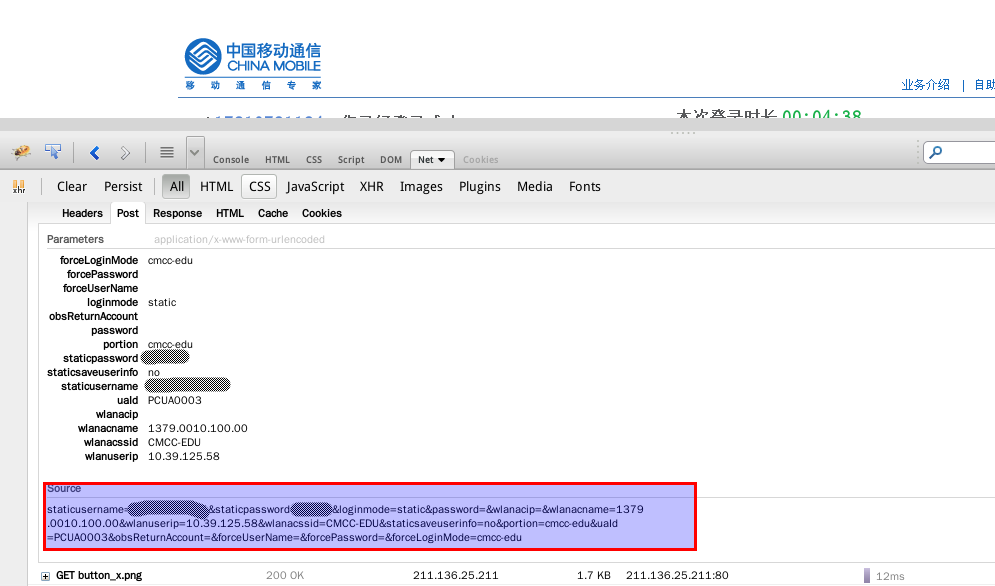
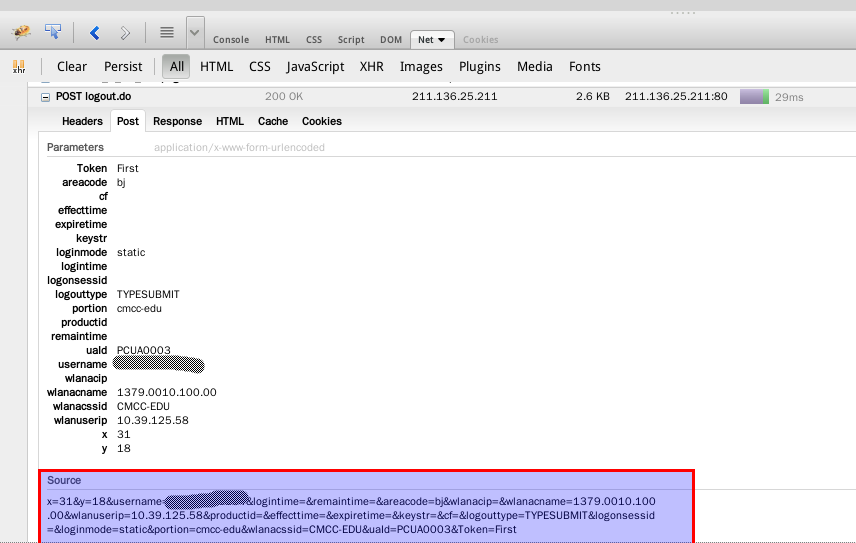

CMCC-EDU 简易客户端
上周抽空写了个 Python 版的 CMCC-EDU 客户端，没什么技术含量，不过作为本 人在 github 上的第一个实际有意义的项目，还是在这里记录一下。
关于为什么写这个客户端，在项目的 README 中已经简要介绍了，这里再次吐槽 一下 CMCC，网页登录界面写得太烂，每次跳转到登录界面后浏览器都不能自动把 所有内容加载，不知道使用了什么奇葩技术，各大浏览器都将那段代码识别为不 安全脚本，每次必须手动加载，而且尽管浏览器提示保存密码但却总是不能保存 密码，所以如果用网页登录的话每次都要手动点击浏览器角上的加载不安全脚本， 并且每次都要输入密码，除非选择了自动登录。另外比较烦的是登录成功后不能 关闭那个页面，否则就找不到下线页面了，CMCC 你就不能提供一个统一的下线页 面吗？虽说关机或断网一段时间（据说是15分钟）后能够自动下线，但毕竟是按 时间计费的，每次用这种暴力下线方式都会浪费一段时间，心里想着总是不爽的。 总之，对于一个正常的用户（或者至少一个 Geek 用户）这些都是让人无法忍受 的，不过 CMCC-EDU 继续给用户每个月免费120小时还是值得点赞的。
有了不满就动手改造之，作为 coder 的好处就是对程序软件不满就可以自己动手 hack 一个符合自己需求的。上 Python 呗
分析
- 加载 CMCC-EDU 登录的完整页面，查找登录按钮点击后执行的操作
<div id="Wp_submit" class="Wp_submit" style="cursor:pointer;" onclick="checkField()"></div>
如上，
onclick只是调用一段 js 对用户输入信息进行有效性检查，理 论上应该是将用户信息用 post 方法提交到服务器，这样才会比较安全。 继续查找有没有 post 方法的表单，发现如下面一行<form id="Wlan_Login" action="https://211.136.25.211:443/login.do?" method="post" name="login">
That's it! 这个 form 下包括用户输入的信息和一些隐藏的信息（即用户 通过WIFI获得的AC相关的信息），要实现登录就得把这些信息 post 到上 面的
action那个 URL 中去。然后我们尝试登录一次，看看数据是怎样 post 到服务器上去的。登录成功后打开 Firebug，查看 Net ，点开POST login.do?，然后再看里面的 Post ，其中 Source 就是我们提交 到服务器上的信息。
Figure 1: Firebug

Figure 2: Login
- 同样方法分析下线操作，下线之后就可以查看 Firebug Net 里的
POST logout.do了，同样 Source 里的信息就是我们要提交的信息，可以发现 登录和下线的服务器是没有变的
Figure 3: Logout
- 有了上述分析就可以用 python 将 Source 里的信息 post 到服务器上试
试登录和下线了，Python 标准库中 urllib(2) 和 httplib 可以用来请求
网页，不过 API 调用很复杂，网上有一个好用的第三方 http 库：
requests ，口号是： HTTP for Humans 。对比一下 urllib 和 requests，发
现 requests 真的是 For Humans，API 调用非常简单直接，很符合
python 哲学： Simple is better than complex. Readability counts .
安装之：
pip install requests --userimport requests source = 'Copied From Firebug-> Net-> POST login.do?-> Post-> Source' url = 'Copied form-> action' # see above <form id="Wlan_Login" action="xxx" ...> r = requests.post(url+'&'+source)
用上述代码在 python 解释器中运行一下，然后打开网页看看是否已经登 录，如果登录成功的话，再试试下面的下线操作
source = 'Copied From Firebug-> Net-> POST logout-> Post-> Source' url = url.replace('login', 'logout') r = request.post(url+'&'+source)
不出意外的话，上面登录和下线操作都可以成功，下一步就是将上面的手 动 Copy 变成自动完成
- 提取登录信息，第1步中已经找到这些信息在那个 form 中，通过程序将其 提取出来就可以替代手工 copy 操作，可以通过 HTMLParser 库或 re 库 完成，不过 CMCC 为我们提供了另一种方案。不知你有没有注意到打开网 页后跳转到的登录页面的 URL，它已经包含我们登录所需的信息了，这位 我们直接解析这个 URL 比从整个网页中提取信息要方便多了，你可能会说 Source 里有好长一段数据呢，URL 里并不包含所有这些数据啊，但是通过 尝试你会发现其它 URL 中没有的信息都是服务器默认的或者对某种登录方 式而言是固定的，所以服务器真正需要的信息只有 staticusername, staticpassword, wlanacname, wlanuserip, loginmode, wlanacssid 这 几个量，而上面所需的 url 也包含在重定向的 URL 中
实现
有了上述分析，实现起来就很 Easy 了，具体实现请直接看 代码 ，这里就不 再赘述了。通过上面的分析基本上对一些网页登录操作过程就清楚了，所以不 要再抱怨你们校园网没有 Linux 客户端了，只要提供网页登录，根据上面的 分析赶紧自己 hack 一个客户端，即使是在控制台下也可以轻松实现登录，只 要你愿意，完全可以实现开机自动登录你们的校园网
Todo
- 希望以后有空将这个客户端扩展到能支持 CMCC
- 考虑用 python 标准库 urllib(2) 和 httplib 重新实现，使安装使用更容 易
- 加入图形界面，顺便用 py2exe 打包给 Windows 用户使用